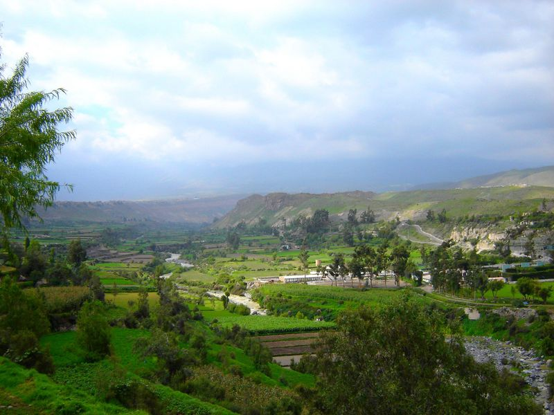
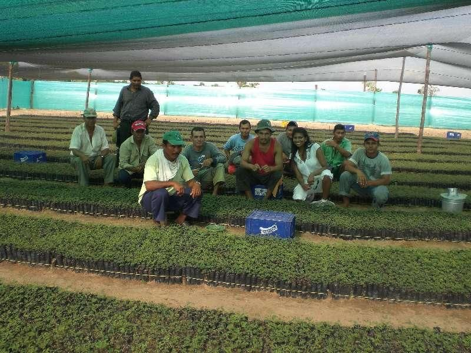
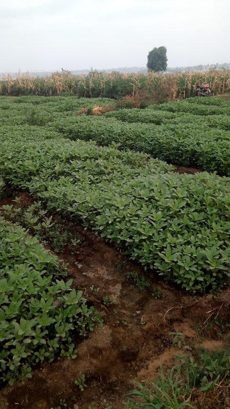
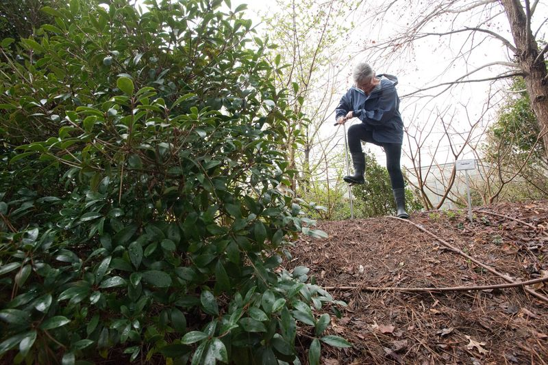
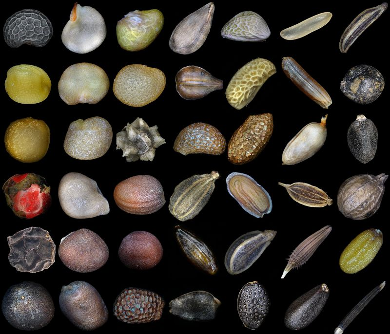

Misión
Proveer insumos agrícolas y forestales de calidad, acompañados de asesoría técnica especializada, para que los productores del sur del Perú aumenten su productividad de forma rentable y sostenible.
Nuestra historia
VerdeAndes Agro S.A.C. nació en 2012 como una pequeña tienda de insumos agrícolas en Cerro Colorado, Arequipa. Hoy somos un proveedor integral de abonos, semillas, materiales orgánicos, materiales inorgánicos y plantones forestales, con presencia en ocho provincias del sur del país.
Trabajamos de la mano con pequeños y medianos productores, asociaciones agrarias, comunidades campesinas y empresas agroexportadoras, brindando no solo productos sino también conocimiento técnico para mejorar la productividad cuidando el suelo y el agua.




Proveer insumos agrícolas y forestales de calidad, acompañados de asesoría técnica especializada, para que los productores del sur del Perú aumenten su productividad de forma rentable y sostenible.
Ser al 2030 la empresa líder del sur peruano en soluciones agrícolas y de reforestación, reconocida por su innovación, su compromiso ambiental y el desarrollo de las comunidades rurales.
Relaciones de largo plazo con cada productor.
Cuidamos el suelo, el agua y los bosques.
Tecnología aplicada al campo andino.
Capacitamos gratis a comunidades rurales.
Trayectoria
Abrimos la primera tienda de insumos en Cerro Colorado.
Iniciamos la producción propia de humus de lombriz y compost.
Inauguramos el vivero de especies nativas en Chiguata.
Análisis de suelo y agua con resultados en 72 horas.
Lanzamos nuestra plataforma web y catálogo en línea.
Organización
Equipo
Gerente General
Ingeniero agrónomo UNSA, 20 años en el sector.

Jefa de Asistencia Técnica
Especialista en nutrición vegetal y fertirriego.
Jefe de Vivero Forestal
Ingeniero forestal, experto en especies nativas.

Jefa Comercial
Atención a asociaciones y agroexportadoras.